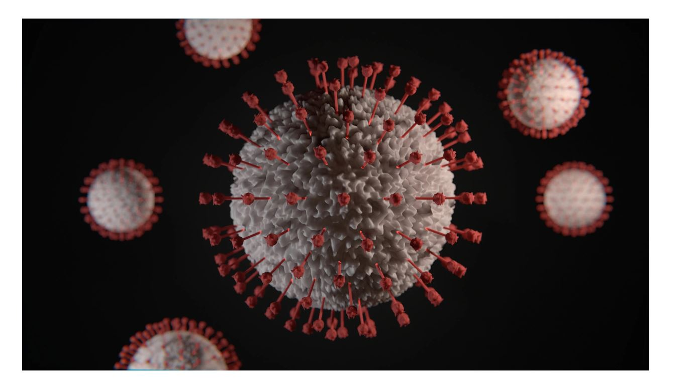
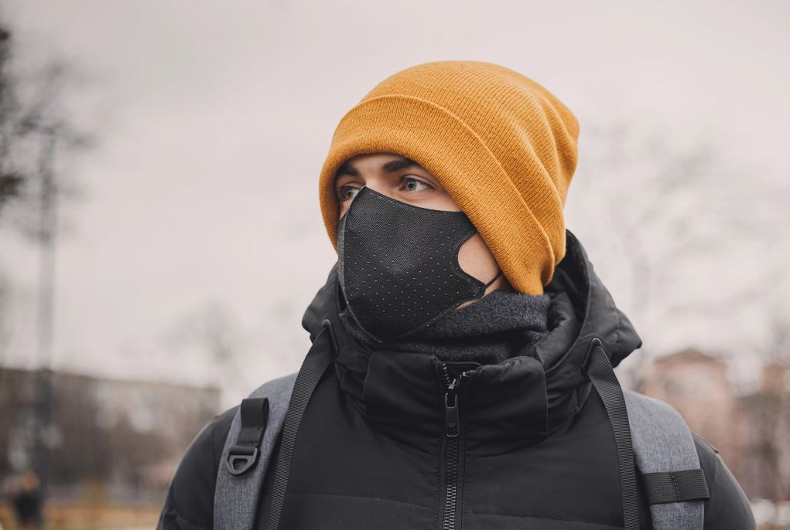

As we peep through the past few weeks we can see that the busy world has come to a pause.A tiny semi living body has quivered the whole world.Yes, u guessed it right I am talking about the deadly virus CORONA.From babies to oldies everyone's life has been affected in some way or the other due to this pandemic.It didn't spare anyone neither the most power countries nor the elite class of the society. But the upshot it had on the poverty-stricken part of the society is terrible.India,being the second most populous country in the world with a large section of its population under the darkness of poverty,illiteracy has to face more challenges to combat this pandemic.
Temples,mosques,churches,gurudwaras and other religious places of worship are shut as precaution to prevent the spread of contagious covid-19.But God have left these beautiful houses and have come in white coats to save the man kind from this malignant infection.The health workers working day in and day out to make this world virus free are not less than warriors.Even at this current moment when a simple sneeze or slight sound of cough chills our nerves these people are treating corona positive patients keeping their heath and their family's well-being at a stake.So our first duty is to show our respect towards these medical staff by taking proper precautions and in case we have the slightest symptoms rather than hiding it we should bring it to their notice so that we as well as other people of our society are safe.Stone pelting,spitting at doctor and health workers which happened in some parts of India won't help in making the country free from this pandemic.It will rather de-motivate the medical staff and harass them mentally which will worsen the situation.
There is no denying of the fact that youth are the torch bearers of a nation but the elderly section are the one who will guide these torch bearers in right path.A country without elderly is like a ship without rudder.As this virus is proving most deadly for the elderly may be due to a weak immune system special care has to be taken of them.They should be advised to stay indoors during these autumn days.Even the elderly medical staff and police should be taken care of.They shouldn't be let to directly deal with the patients but they can provide their supervision and guidance to the younger staff.During these days every individual should keep doing things like yoga,exercise,taking a proper balance diet,avoiding chilled food n drinks and most importantly staying indoors and maintaining social distancing so that we can get out of this situation swiftly without losing much lives.If Its necessary to move out MASK and SOCIAL DISTANCING is a must.
Life is always above livelihood.To prevent spread of this contagious virus a complete national lockdown was necessity of the hour.But it has also brought economy to a stand still with industries and factories being shut.It has made the life of street vendors,hawkers,shop owners,daily wagers even more miserable.Though the govt has announced certain corona relief for these people in past few days still it's not sufficient to meet their needs.The relief announced was merely 1% of the country's gdp.If steps are not taken in time hunger might take more lives than this virus.Corona didn't spare our farmers too.Due to lockdown and lack of marketing their crops and harvest are being infected and decayed by pest and insects.Government should take steps like waivers of loans,providing certain compensation to the farmers so that they can meet their loses.
Corona has shown us how technology plays a major role in our life.During these days of lockdown "work from home" has become the only way of connection between employees and their offices.Online classes have become the only way connection between teachers and their students.Video conferencing has become the only way different national leaders to hold their meetings.Most internships for students during these days are also being conducted online.Online no contact delivery has also became popular during lockdown.A big thanks to science and technology for making our lockdown days a bit smooth.But some jerks are using this technology to spread illogical rumours about this virus and are trying to spread communal hatred.Though the government is taking actions against them but stricter action against such activities is the need of the hour.
Self-reliance has become the call of the hour both at national and individual level.India should try producing its own masks, testing equipments,medicines and other medical essential as it would ease the situation.On individual level due to lock down every person has to do their own work without relying on servants and maids as it has become the need of the hour.
Lastly I would like to say,let's stay indoors, take proper precautions n cooperate with the health workers, government and police so that we can win this battle against covid-19 soon without much loss of human life.Lets eat healthy,exercise n maintain social distancing to combat this virus.Above all we can spend time developing new hobbies and brushing our old ones during lockdown.Moreover we have got some time to spend with our family taking a break from our daily hustle bustle.Let's pray to the almighty that this pandemic doesn't become the 6th mass extinction on earth due to our carelessness.Stay healthy and stay safe.